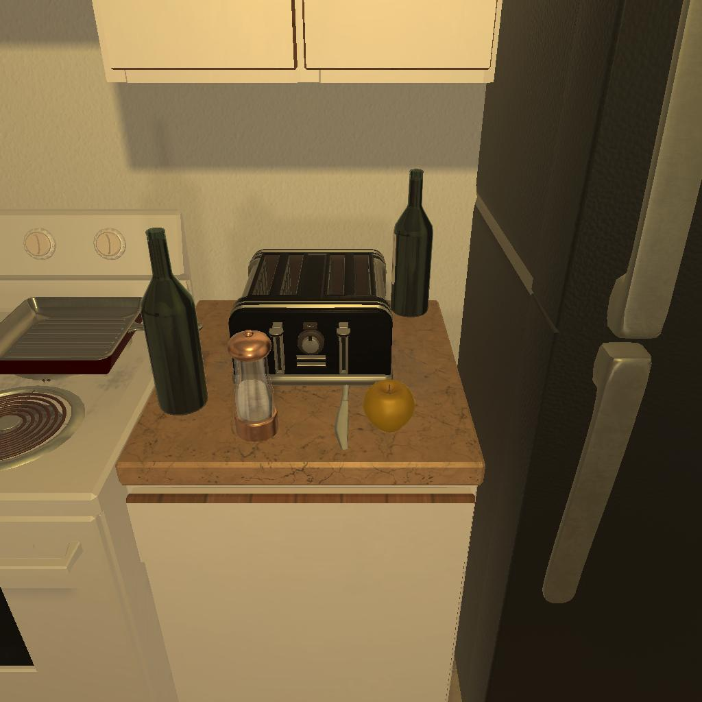

---------------------------------------------------------task: 14---------------------------------------------------------
--------------------------------------------------------------------------------------------------------------------------------------------------------------------
--------------------------------------------------------------------------------------------------------------------------------------------------------------------
Step:--------------------------------------------------------------------------8-------------------------------------------------------------------------------
----------------------------------------
VLM Prompt:
**Task**
Please perform as an embodied AI agent. Our final objective is to cool some apple and put it in countertop. Below is the plan for completing the task, the current observation, alongside historical data and admissible actions for the next step. Please determine the best action for the next step!
**Plan**
Below is a detailed step-by-step plan to complete the task.
1. Find an apple.
2. Pick up the apple.
3. Find a fridge.
4. Cool the apple with the fridge.
5. Find a countertop.
6. Place the cooled apple on the countertop.
**Current Observation**
Displayed is an image capturing the current position of the agent.
**History Information**
Displayed are the previous observations with their corresponding actions.
State 1:
1. Step Index in the Plan: 1
2. Objects: Kitchen Sink, Glass
3. Action: go to fridge 1
State 2:
1. Step Index in the Plan: 1
2. Objects: Fridge
3. Action: go to countertop 1
State 3:
1. Step Index in the Plan: 4
2. Objects: Microwave, Apple, Fridge, Countertop
3. Action: go to countertop 2
State 4:
1. Step Index in the Plan: Unknown (implied placement of the cooled apple)
2. Objects: Countertop, Apple (cooled)
3. Action: take apple 1 from countertop 2
State 5:
1. Step Index in the Plan: 6
2. Objects: Apple, Countertop, Fridge
3. Action: put apple 1 in/on countertop 2
State 6:
Step Index in the Plan: Unknown
Objects: Countertop, Various Objects, Apple (presumed to be cooled), Fridge
Action: go to countertop 1
State 7:
2. Step Index in the Plan: 6
3. Objects: Microwave, Apple (not visible), Countertop
4. Action: go to countertop 2
**Admissible Actions**
(1): go to microwave 1
(2): go to cabinet 1
(3): go to diningtable 1
(4): go to drawer 1
(5): go to sink 1
(6): go to cabinet 2
(7): go to cabinet 3
(8): go to sinkbasin 1
(9): go to cabinet 4
(10): go to cabinet 5
(11): go to drawer 2
(12): go to toaster 1
(13): go to cabinet 6
(14): go to stoveburner 1
(15): go to cabinet 7
(16): go to fridge 1
(17): go to stoveburner 2
(18): go to stoveburner 3
(19): go to stoveburner 4
(20): go to drawer 3
(21): go to cabinet 8
(22): go to cabinet 9
(23): go to cabinet 10
(24): go to coffeemachine 1
(25): go to cabinet 11
(26): go to garbagecan 1
(27): take pan 1 from countertop 2
(28): take winebottle 2 from countertop 2
(29): take winebottle 1 from countertop 2
(30): take saltshaker 1 from countertop 2
(31): take apple 1 from countertop 2
(32): take stoveknob 1 from countertop 2
(33): take stoveknob 2 from countertop 2
(34): take butterknife 1 from countertop 2
**Analysis Guideline**
1. Analyze the history and current observation, and then determine our current step in the plan and our current place.
2. List all visible objects related to the task in the current observation, without summarizing any as "various items."
3. Analyze the objects in the current observation based on the history and the requirements for the current step, and then determine if we can complete the step with the current observation.
4. Analyze and decide on the most appropriate action to take.
5. Summarize the analysis using the following format: "Analysis: [The summarization of the analysis], The Most Appropriate Action: (i which is the integer.): [Selected action]"
**Notes**
1. We must complete each step of the plan in order and cannot skip steps when the previous ones are not finished.
2. For "Go to" actions listed as "go to xxx [n]", interpret this as there are n distinct actions available: "go to xxx 1", "go to xxx 2", ..., "go to xxx n". Select one specific action from these options instead of using "go to xxx [n]".
3. If receptacles such as drawers, cabinets, and so forth are closed in the current observation, we may try to open them.
4. Pay attention to synonyms and ensure clarity in the terms used.
5. We must determine and provide the single action which must be in the **Admissible Actions**.
6. If there is no history available, we are at the first step and the current place is "Unknown".
**Answer**
Please select the most suitable action by following the **Analysis Guideline**, keeping the above **Notes** in mind.
----------------------------------------
----------------------------------------
VLM Response:
Analysis: According to the plan, we need to place the cooled apple on the countertop. From the current observation, we are positioned near the fridge, which is step 3 in the plan. The visible objects related to the task in the current observation are an apple on the countertop and the fridge. Based on the history, we have already cooled the apple (step 4) and attempted to place it on the countertop (step 6), but the action in State 7 implies that the apple is not yet on the countertop, as the agent was directed again to go to countertop 2. Therefore, we need to complete step 6 by placing the cooled apple on the countertop. The most appropriate action from the admissible actions is to take the apple from the countertop and then place it back on the countertop to ensure it is recognized as completing the task.
The Most Appropriate Action: (31): take apple 1 from countertop 2
----------------------------------------
----------------------------------------
>>> Refine VLM Response and Get Pure Action: take apple 1 from countertop 2
----------------------------------------
-----------------------------------------------------------------
Running time: 9.282822847366333 seconds
Total Money: 0
-----------------------------------------------------------------
-----------------------------------------------------------------
Summarization Prompt:
**Context**
Analysis: Since there is no history information, we are at the first step in the plan, which is to find a statue. The current place is unknown. In the current observation, we see a floorlamp next to an armchair with a small table that has a small object on it, which could potentially be the statue we are looking for. Since the plan requires us to find a statue first and it appears there might be one on the table next to the armchair, we should investigate this object to determine if it is the statue we need.
The Most Appropriate Action: (1): go to armchair 1
**Summary**
1. Step Index in the Plan: 1
2. Objects: Floorlamp, Armchair, Small Table, Small Object (potential statue)
3. Action: go to armchair 1
**Context**
Analysis: According to the plan, we need to place the cooled apple on the countertop. From the current observation, we are positioned near the fridge, which is step 3 in the plan. The visible objects related to the task in the current observation are an apple on the countertop and the fridge. Based on the history, we have already cooled the apple (step 4) and attempted to place it on the countertop (step 6), but the action in State 7 implies that the apple is not yet on the countertop, as the agent was directed again to go to countertop 2. Therefore, we need to complete step 6 by placing the cooled apple on the countertop. The most appropriate action from the admissible actions is to take the apple from the countertop and then place it back on the countertop to ensure it is recognized as completing the task.
The Most Appropriate Action: (31): take apple 1 from countertop 2
Please summarize the context by following above examples when providing the summary, and ensure that only the summary is included, without any extra explanation.
**Summary**
-----------------------------------------------------------------
-----------------------------------------------------------------
Summarization Response:
1. Step Index in the Plan: 6
2. Objects: Apple, Countertop, Fridge
3. Action: take apple 1 from countertop 2
-----------------------------------------------------------------
-----------------------------------------------------------------
Text Observation:You pick up the apple 1 from the countertop 2.
-----------------------------------------------------------------
UNSUCCEED